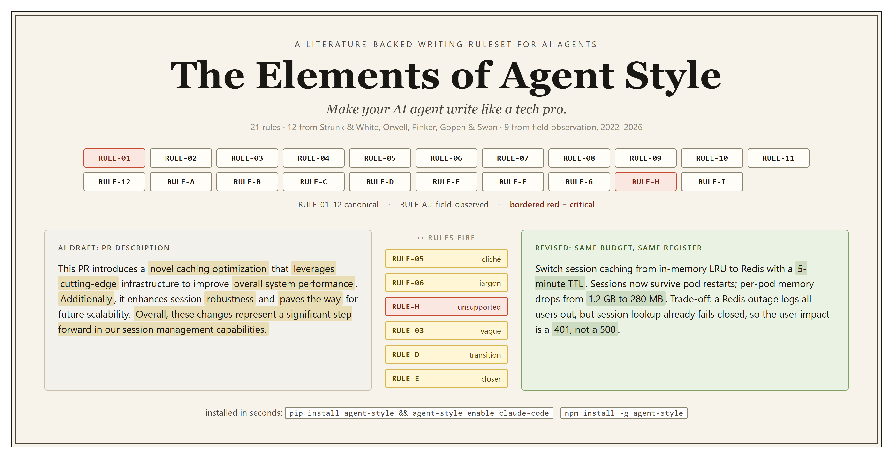
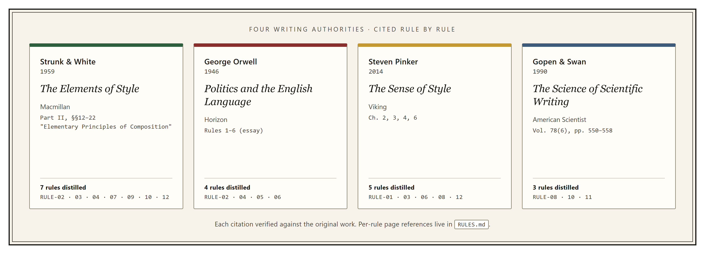
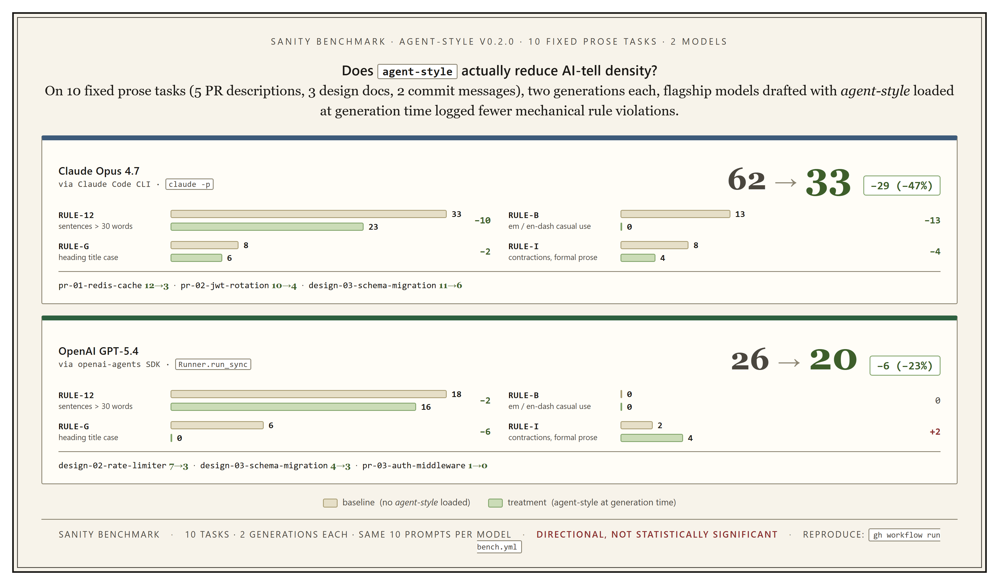

Make AI agents write like a tech pro.

agent-style is a drop-in rules package that changes how AI coding and writing agents produce prose. It ships 21 curated English style rules that the agent reads as part of its system prompt or project config, so the first draft conforms to expected writing norms before any post-hoc review. Twelve rules come from canonical writing authorities (Strunk & White, Orwell, Pinker, Gopen & Swan); nine come from field observation of LLM output across research, proposal, and documentation work, 2022 to 2026.
The goal is not a post-hoc linter. The goal is to shape agent behavior at the moment of generation, so that what comes out of Claude Code, Codex, GitHub Copilot, Cursor, Aider, and other AGENTS.md-compliant tools reads like technical prose a person would write, not the default AI voice.
GitHub Repository | Star on GitHub | PyPI Package | npm Package | Back to Open Source
If this ruleset improves your agent output, please star the GitHub repository to help more practitioners discover it.
Most writing-style tools run after the draft exists: the agent writes something, a linter flags issues, and someone (usually you) reconciles the two. That loop is slow, and it treats AI-tell vocabulary as a cosmetic cleanup problem instead of a generation problem. agent-style takes the opposite approach: load the rules into the agent's instruction stack so the first draft already follows them. Post-hoc review, when needed, runs against a draft that is already close to the target.
The rules are split by origin. The agent reads both groups as peers.
RULE-01..12 (canonical). Distilled from Strunk & White, Orwell, Pinker,
and Gopen & Swan; each rule cites its source by chapter, section, or essay rule. Covers tacit
knowledge, passive voice, concrete versus abstract language, needless words, dying metaphors, jargon,
affirmative form, calibrated claims, parallel structure, word order, stress position, and sentence length.RULE-A..I (field-observed). Patterns logged from AI output across dozens of
writing projects and code releases, 2022 to 2026. Covers over-bulleting, em and en dashes as casual
punctuation, repeated sentence openers, overused transitions ("Additionally", "Furthermore"), paragraph
closers, term drift, title-case headings, citation discipline (the critical one), and contraction use.
RULE-01..12. Each rule cites its source by chapter, section, or essay rule; every citation was verified against the original work.
Install the CLI once (pip install agent-style or npm install -g agent-style), then
pick the paths you want. The two paths are complementary, not alternatives.
One command per tool wires the ruleset into the agent's instruction file:
agent-style enable claude-code # Claude Code
agent-style enable agents-md # Codex, Jules, Zed, Warp, Gemini CLI, VS Code, and other AGENTS.md tools
agent-style enable cursor # Cursor
agent-style enable copilot # GitHub Copilot (repo-wide)
agent-style list-tools # see all supported surfaces
Each adapter uses a safe install mode (import-marker, append-block, or
owned-file) that will not overwrite user-authored content. agent-style disable <tool>
reverses it.
Soft enforcement nudges the model; training-prior vocabulary can still leak into the first draft for prose over a couple of hundred words. That is what the second path is for.
After a draft exists, ask for a review. The style-review skill runs a deterministic audit of the
draft against the 21 rules, reports per-rule counts and first violations, and on your confirmation writes a
polished copy beside the original.
# Inside Claude Code (skill-host path):
/style-review DESIGN.md
# Anywhere pip or npm runs (CLI path):
agent-style review DESIGN.md # human-readable audit
agent-style review DESIGN.md --audit-only # machine-readable JSON
agent-style review --compare a.md b.md # A/B delta per rule
The source file is never touched; the revised draft lands at DESIGN.reviewed.md and you merge
hunks by hand. Semantic rules (vague claims, calibrated claims, citation discipline, stress position, term
drift, curse of knowledge, needless words) run through the skill host's model; the remaining structural rules
are deterministic and work from the CLI with no model needed.
Sanity bench on 10 fixed prose tasks (5 PR descriptions, 3 design-doc sections, 2 commit messages), 2
generations each, flagship models drafting with agent-style loaded at generation time versus not.

docs/bench-0.2.0.md.
Numbers are directional, not statistically significant (40 calls per model). The ruleset reduces AI-tell density on models where it matters; the size of the drop varies with the baseline. Gemini 2.5 Pro baseline is already clean, so the ruleset has little headroom there; archived separately in the repository.
v0.2.0 primary set ships adapters for:
CLAUDE.md.AGENTS.md..cursor/rules/..claude/skills/.Amazon Q Developer, JetBrains AI Assistant, Windsurf, Ollama, Replit Agent, OpenCode, Continue.dev, Tabnine, and OpenAI Agents SDK skills are planned for v1.1; tracked in the repository's adapter matrix.
agent-style sits next to anywhere-agents in the Developer Tools for AI direction. anywhere-agents ships the full agent configuration stack (writing rules, routing, skills, hooks, bootstrap). agent-style is the writing-rule slice of that stack, published as a standalone, dependency-free package so teams that do not want the full configuration can still adopt the writing discipline. The same 21 rules are used in both places.
Everything is plain Markdown with SPDX headers. Fork the repository, swap in your own rules or adapters, and
keep pulling upstream with git merge upstream/main. Contributions that add a canonical rule must
cite a source from the writing-authority bucket, include BAD and GOOD examples drawn from real technical
prose, and include a rationale for why the rule matters specifically for AI-agent-generated output. See
CONTRIBUTING.md in the repository for the full contribution guide.
Dual-licensed with file-level SPDX boundaries: RULES.md, source lists, notices, and adapter
files are CC BY 4.0; enforcement
code, generator scripts, and CI workflows are MIT.
Every source file carries an SPDX-License-Identifier header. See NOTICE.md in the
repository for the attribution snippet that consumers should retain on reuse.